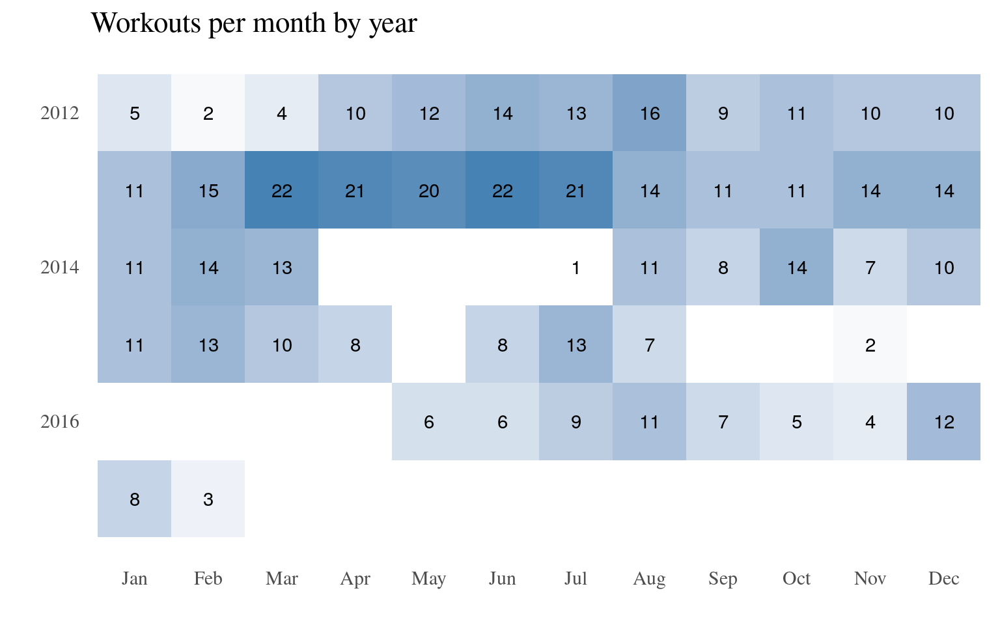
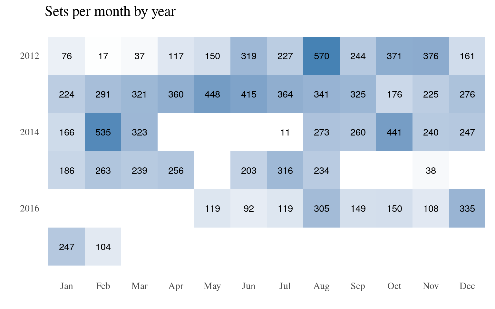
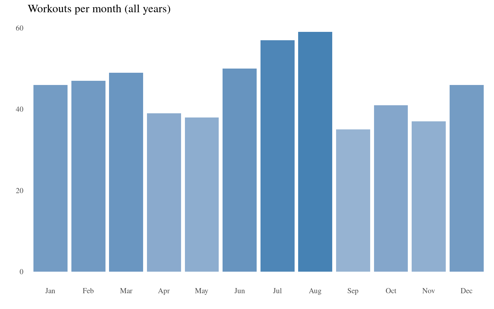
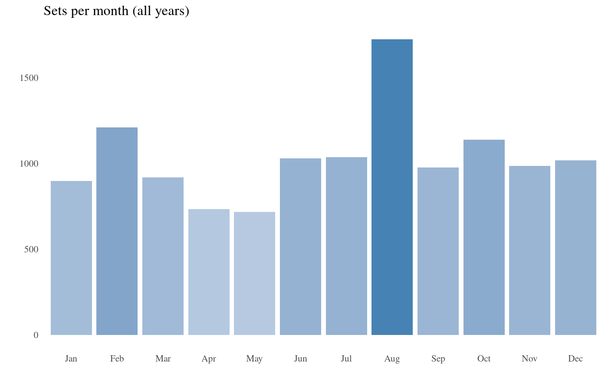

pumpR Workout Report
Magnus Nissel
2017-02-05
1 Overview
This is a year-by-year overview generated from my workout logs 1. I have excluded cardio activities (e.g. indoor rowing, swimming) and there are a couple of untracked workouts missing from the data.
1.1 Frequency
The first plot shows the total number of days on which I logged a workout, the other displays the monthly sum of sets to account for workout length.

My most active year was cleary 2013, with 20+ workouts per month from March to July. However, these were generally shorter workouts with body part splits. I am not quite sure about the three-month break in 2014, but my least active period was from September 2015 to April 2016. I tried some CrossFit in December - which I did no bother logging - and switched gyms 2, but most of the absence was due work keeping me more busy than usual and the flu.

Apparently I am really motivated in August.